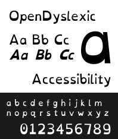
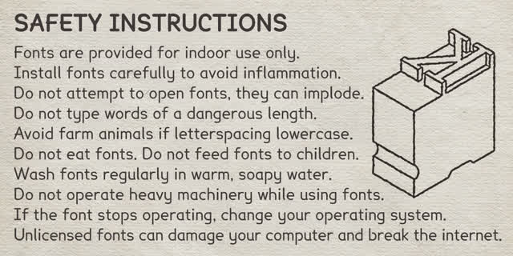
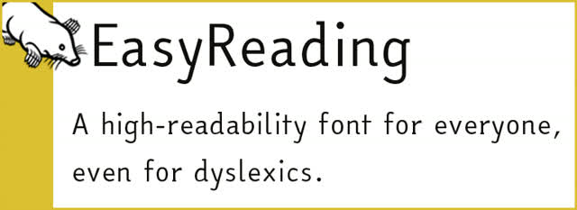

Fuentes que te ayudan a leer sin confusiones en pantallas.

Esta Fuente es libre y gratuita
Abbie González la creó porque las fuentes similares eran caras e inaccesibles, así que la publicó bajo licencia open source para que todos puedan usarla.
Descargas:

Diseñada pensando en accesibilidad y legibilidad. Captura la claridad de Comic Sans pero sin el estilo de cómic. Tiene características que ayudan a lectores disléxicos: b y d asimétricas, formas manuscritas de a y g.
Descarga:
Gratis para uso personal, educativo y benéfico.

Tipografía paga (gratis solo uso personal) para idiomas con alfabeto latino. Creada por Federico Alfonsetti con enfoque en Diseño Universal.
Es la única fuente certificada científicamente como herramienta válida para personas con dislexia y facilitadora para todo tipo de lectores.
Descarga:
Requiere llenar formulario. Gratis solo para uso personal.
Instala la Fuente deseada en tu Sistema.
Instalá la extensión Stylus desde Aqui
https://chromewebstore.google.com/detail/stylus/clngdbkpkpeebahjckkjfobafhncgmne
Agregá esta regla CSS específica;
Ajusta desde el Menu que Fuente y Emoji Quieres
Todas las webs usarán tu fuente preferida 🤗
Listo, todas las apps tendrán esa fuente 😍
Esta seccion es complicada, no muchos telefonos son compatibles.
Si tu Telefono tiene Root es Facil
Pero si no, Debes hacer prueba y error con esta app;